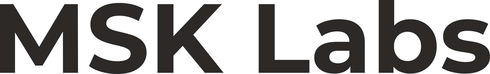

Özgün, kullanıcı dostu ve güvenilir yazılım çözümleri. Independent, user-friendly and reliable software solutions. حلول برمجية مستقلة وسهلة الاستخدام وموثوقة.
İbadet araçlarından donanım sağlığına, verimlilik asistanlarından fikir yazılarına kadar hayatı kolaylaştıran dijital ekosistem. A digital ecosystem simplifying daily life—from worship tools and hardware health to productivity assistants and thought essays. نظام بيئي رقمي يسهل الحياة اليومية — من أدوات العبادة وصحة الأجهزة إلى مساعدي الإنتاجية والمقالات الفكرية.
MSK Labs, Müslüman, Samimi ve Kararlı insanların bir araya gelerek oluşturduğu; insanlara fayda sağlayabilecek teknoloji ve sosyal yapılar üretmeyi amaçlayan bağımsız bir ekip çalışmasıdır.
Bugün çalışmalarımızın merkezinde yazılım bulunuyor. Mobil, masaüstü ve web alanlarında; insanların günlük hayatında karşılaşabileceği ihtiyaçlara yönelik, mümkün olduğunca güvenli, mahremiyete saygılı, ulaşılabilir ve kullanıcı odaklı ürünler geliştirmeye çalışıyoruz.
MSK Labs'ı yalnızca yazılım üreten bir ekip olarak görmüyoruz. Teknolojinin insan hayatına nasıl dokunduğunu, kullanıcıların verilerinin ve güveninin nasıl korunması gerektiğini önemsiyor; imkânlarımız ölçüsünde insanlara fayda sağlayan yapılar oluşturmayı hedefliyoruz.
Bu anlayışın yanında BİZCE, düşüncelerimizi ve değerlendirmelerimizi; ANILTILAR, yaşanmışlıklarımızdan çıkardığımız tecrübeleri; GÜNCEL ise yaşanan güncel olaylara MSK Labs'ın bakışını paylaşacağımız alanları oluşturuyor.
Bugün küçük bir ekip olarak başlayan bu çalışma, gelecekte farklı teknoloji alanlarında daha kapsamlı ve insan odaklı ürünler geliştirebilecek bir yapıya dönüşmeyi hedefliyor.
MSK Labs hakkında bizi, çalışma anlayışımızı, hedeflerimizi ve yaptığımız çalışmaları daha yakından tanımak için.. Devamını Oku →
MSK Labs is an independent team effort formed by a few Muslim, Sincere, and Keen (Determined) individuals coming together to produce technological and social structures that can benefit humanity.
Today, software is at the center of our work. Across mobile, desktop, and web platforms, we strive to build secure, privacy-respecting, accessible, and user-focused products addressing real everyday needs.
We do not see ourselves merely as a software team. We care deeply about how technology touches human life and how user data and trust should be protected.
Alongside this philosophy, BİZCE shares our thoughts; ANILTILAR recounts our lived experiences; and GÜNCEL reflects MSK Labs' perspective on current events.
Starting today as a small team, this effort aims to evolve into a broader, human-centered structure across diverse technology fields.
To learn more about our values, vision, goals, and projects.. Read More →
MSK Labs هو عمل جماعي مستقل أسسه مجموعة من الأفراد المسلمين، الصادقين، والمصممين (MSK)، بهدف إنتاج بنيات تكنولوجية واجتماعية تعود بالنفع على البشرية.
البرمجيات هي مركز أعمالنا اليوم. في مجالات الهاتف وسطح المكتب والويب، نسعى لتطوير منتجات آمنة ومحترمة للخصوصية وسهلة الاستخدام.
نحن لا نرى أنفسنا مجرد فريق لتطوير البرمجيات. نهتم بكيفية تأثير التكنولوجيا على حياة الإنسان وكيفية حماية بيانات المستخدمين وثقتهم.
إلى جانب هذا الفكر، يشارك قسم BİZCE أفكارنا؛ ويحكي ANILTILAR تجاربنا المعاشة؛ بينما يعبر GÜNCEL عن منظور MSK Labs للأحداث الراهنة.
يهدف هذا الجهد اليوم للنمو والتطور في مجالات تكنولوجية متنوعة وأكثر شمولاً.
لمعرفة المزيد عن رؤيتنا وأهدافنا ومشاريعنا.. اقرأ المزيد ←
Teknolojiye, hayata ve insanlığa derin bakış. Özgün fikir yazıları, felsefi incelemeler ve sesli makale okuma olanağı. A deep perspective on technology, life, and humanity. Original thought essays and audio reader features. نظرة عميقة على التكنولوجيا والحياة والإنسانية. مقالات فكرية وقراءة صوتية.
Kullanıcı verisine ve gizliliğine saygılı, %100 ücretsiz ve reklamsız mobil ve masaüstü yazılım çözümleri. User privacy-focused, 100% free, and ad-free mobile & desktop software solutions. حلول برمجية للهواتف وسطح المكتب مجانية وبدون إعلانات ومحترمة للخصوصية.
MSK Labs ekosistemindeki güncellemeler, yeni modül duyuruları, platform haberleri ve geliştirme notları. Updates across the MSK Labs ecosystem, new module releases, platform announcements, and tech logs. تحديثات منصة MSK Labs، إعلانات الوحدات الجديدة وملاحظات التطوير.
Yaşanmış tecrübeler, ders çıkarılacak samimi anlatılar, insan hikayeleri ve iz bırakan unutulmaz anılar. Real-life memoirs, lived experiences, life lessons, and inspiring personal stories. قصص واقعية وتجارب حياة مجهولة الأسماء تحمل دروساً وإلهاماً.